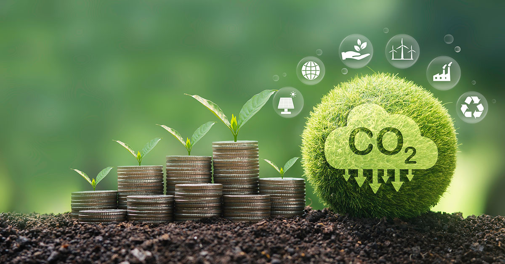
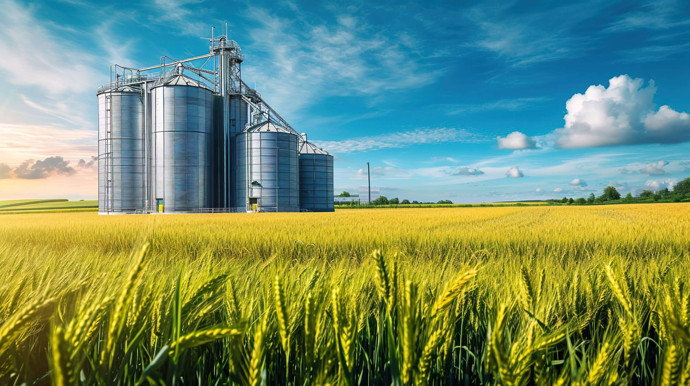

Produção sustentável
Incentivo a práticas agrícolas que consideram a preservação ambiental.
AGRICULTURA E SUSTENTABILIDADE
Como a inovação, o mercado de carbono e as práticas sustentáveis podem transformar o futuro do agronegócio.
Conheça o projeto01 — ECONOMIA E MEIO AMBIENTE
Uma ferramenta econômica que busca incentivar a redução das emissões de gases de efeito estufa.
O mercado de carbono emergiu como uma das ferramentas econômicas utilizadas no combate às mudanças climáticas. Seu funcionamento baseia-se na precificação das emissões de gases de efeito estufa (GEE).
Cada crédito de carbono representa, em regra, uma tonelada de dióxido de carbono equivalente (CO₂e) que deixou de ser emitida ou foi removida da atmosfera, conforme critérios específicos.
Dessa maneira, empresas que reduzem suas emissões podem gerar créditos, enquanto outras podem adquiri-los para compensar parte de suas emissões.

02 — IMPACTO SOCIAL
A sustentabilidade também está presente nas escolhas e atividades do dia a dia.
Você já parou para pensar que o mercado de carbono pode afetar o seu dia a dia, mesmo que você nunca tenha comprado ou vendido um crédito?
Quando indústrias e marcas passam a considerar suas emissões, elas podem ser incentivadas a adotar embalagens sustentáveis, processos de produção mais limpos e transportes eficientes.
Além disso, a transição para uma economia de baixo carbono pode estimular investimentos em energias renováveis, transporte sustentável e preservação ambiental.
03 — PRODUÇÃO E INOVAÇÃO
A produção agrícola também pode contribuir para um futuro mais sustentável.

O agronegócio possui grande importância para a economia brasileira. Entretanto, seu desenvolvimento também precisa considerar os impactos ambientais.
Práticas agrícolas sustentáveis podem contribuir para o uso responsável dos recursos naturais e para a redução de impactos ambientais.
A inovação e a tecnologia podem auxiliar nesse processo, tornando a produção mais eficiente e consciente.
Incentivo a práticas agrícolas que consideram a preservação ambiental.
Desenvolvimento de soluções para melhorar a eficiência da produção.
Valorização de iniciativas que buscam conciliar desenvolvimento e sustentabilidade.
O FUTURO COMEÇA AGORA